5 SYSTEM DESIGN
5.1 System Architecture
The architecture is organised into presentation, API, service and data tiers. The presentation tier contains Next.js routes and React components. The API tier exposes FastAPI endpoints and Pydantic schemas. The service tier contains weather, rainfall-grid, hydrology, feasibility, MCDA, cost-benefit, text-shaping and PDF-report modules. The data tier contains the assessment table, precipitation raster and bundled fonts.
This separation makes the domain logic independent of HTTP and UI concerns. Services receive and return Pydantic models, so they can be unit-tested without a browser. The API layer is responsible for validation, orchestration, persistence and error translation. The frontend is responsible for state, charts and presentation; it does not compute hydrological results.
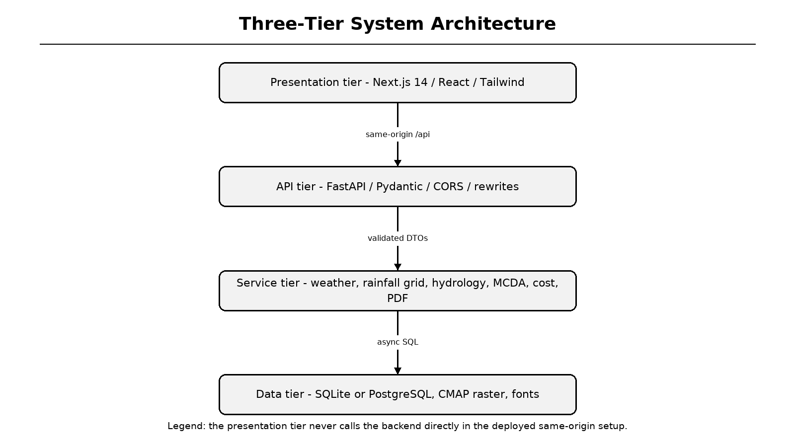
Figure 5.1: Three-tier system architecture
Legend: arrows show request flow from browser to API, services and data.
5.2 Frontend Design
The frontend uses the Next.js App Router with six static routes: home, about, assess, results, not-found and AR. The assessment page is a client component with a three-step wizard. React Hook Form and Zod manage state and validation, while Framer Motion supplies step transitions [32][33]. The map picker is dynamically imported with server-side rendering disabled because Leaflet requires the browser window [34].
After submission, the full AssessmentResponse is stored in localStorage under hydro_result and the assessment ID is placed in the URL. The results page reads localStorage first and falls back to GET /api/assessment/{id} for shared links. Recharts renders monthly rainfall, runoff and savings charts from the same response object.
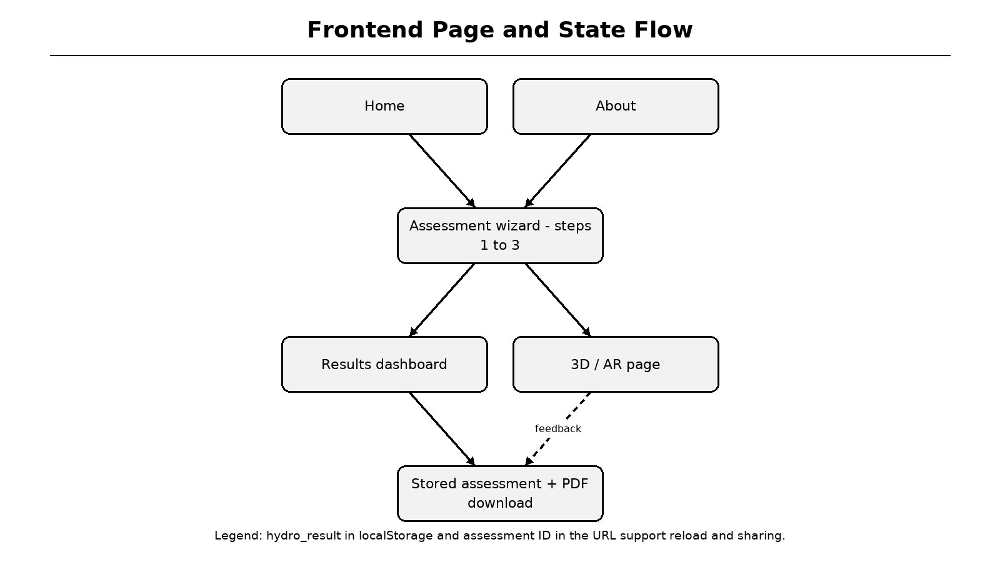
Figure 5.2: Frontend page and state flow
Legend: results state is shared with the 3D/AR page and PDF download action.
5.3 Backend API Design
FastAPI exposes health, weather preview, assessment creation, assessment retrieval, PDF download, assessment history and manual database initialisation endpoints. Interactive OpenAPI documentation is available at /docs. The main assessment endpoint follows a fixed sequence: weather, runoff, recharge, recommendations, cost-benefit, hydrogeology, response creation and persistence.
Startup uses a lifespan handler to create tables, eliminating the fresh-clone failure where the first assessment returned HTTP 500. A guarded init_db function prevents repeated concurrent creation. Production maintenance endpoints require an admin token; development keeps them open for local convenience. CORS origins are configurable through environment variables.
Table 5.1: API endpoints
| Method | Endpoint | Purpose |
|---|---|---|
| GET | /api/health | Service health and timestamp |
| GET | /api/weather | Rainfall preview for coordinates |
| POST | /api/assess | Run full assessment and persist |
| GET | /api/assessment/{id} | Retrieve stored response |
| GET | /api/report/{id} | Generate PDF report |
| GET | /api/assessments | Recent assessments (redacted if unauthorised) |
| POST | /api/init-db | Manual table creation |
| GET | /docs | Swagger UI documentation |
5.4 Data Contracts and Validation
Pydantic models define AssessmentRequest, WeatherData, RunoffResult, RechargeResult, StructureRecommendation, MCDAInfo, CostBenefitAnalysis, HydroGeoInfo and AssessmentResponse. TypeScript interfaces in frontend/lib/types.ts mirror these contracts. This alignment prevents silent field drift between Python and browser code.
The request schema restricts roof and soil types to enumerations and allows optional override fields. The response schema always includes both runoff methods, provenance fields, AHP audit information and nullable payback. A null payback explicitly means that the system does not repay its capital cost at the selected tariff; it is not displayed as a numeric sentinel.
Table 5.2: Principal data contracts
| Model | Important fields | Design note |
|---|---|---|
| AssessmentRequest | roof_area, soil_type, latitude, longitude | Validated by Pydantic/Zod |
| WeatherData | monthly_rainfall, source, method | Provenance is mandatory |
| RunoffResult | rational + SCS-CN values | Cross-check always visible |
| RechargeResult | infiltration_rate, score | Soil and depth based |
| StructureRecommendation | score, dimensions, criteria | Auditable ranking |
| CostBenefitAnalysis | cost, savings, payback, ROI | Payback is nullable |
| AssessmentRequest -> get_weather_data(lat, lon, override?) WeatherData + Request -> calculate_runoff() / calculate_recharge() Runoff + Recharge -> get_recommendations() -> list[Structure] Top structures -> calculate_cost_benefit() -> AssessmentResponse AssessmentResponse -> SQLite/PostgreSQL -> PDF / Results / AR |
5.5 Data Flow Diagram - Level 0
The Level-0 DFD shows the user as the source of site inputs and the recipient of assessment results. The HYDRO RAIN GUARD process is the central transformation. External data and storage include the precipitation raster, optional weather service, map services and the assessment database.
This high-level view emphasises that the system is not merely a form. It transforms validated site and rainfall data into hydrological, economic and visual outputs. Every output can be traced back to the same assessment identifier, which is essential for reproducibility.
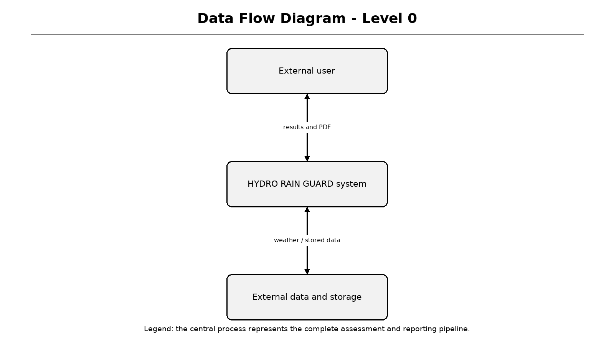
Figure 5.3: Data Flow Diagram - Level 0
Legend: input arrows enter the central process; output arrows return results and reports.
5.6 Data Flow Diagram - Level 1
Level 1 decomposes the central process into five stages: validate input, acquire rainfall, compute hydrology, rank structures and generate outputs. The rainfall raster and assessment database act as data stores. Weather preview uses stages 1 and 2, whereas a full assessment uses all five stages.
The decomposition matches the service modules in the backend. A failure in optional live weather does not stop the rainfall stage because the climatology grid is local. A failure in database persistence is reported as an API error, while calculations can still be unit-tested independently.
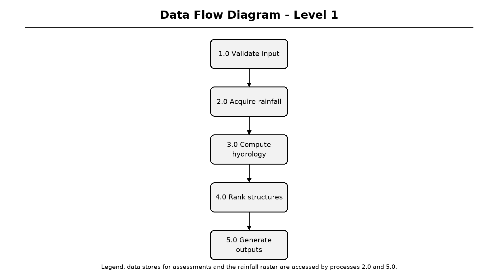
Figure 5.4: Data Flow Diagram - Level 1
Legend: numbered processes correspond to validation, acquisition, computation, ranking and output.
5.7 Data Flow Diagram - Level 2
Level 2 focuses on hydrological computation. Monthly rainfall feeds both the Rational method and SCS-CN cross-check. The first-flush deduction is applied to the selected primary method. Harvestable volume then feeds recharge sizing, structure ranking and monthly savings. Peak runoff rate is derived from the wettest month.
The two runoff methods are not merged into a hidden average. The chosen method drives economics, while the other is displayed as a percentage difference. This design makes model uncertainty visible to the user and supports future calibration against observed roof runoff data.
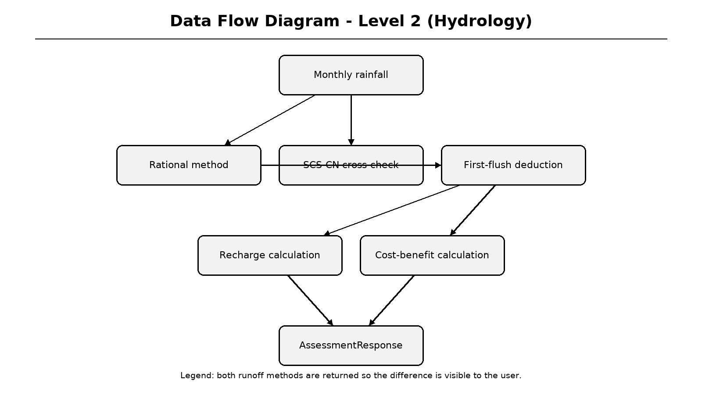
Figure 5.5: Data Flow Diagram - Level 2: hydrology
Legend: parallel computation paths provide an auditable cross-check.
5.8 Entity Relationship and Database Design
The database contains a single Assessment entity. Its primary key is an eight-character uppercase identifier derived from UUID4. Indexed summary columns store name, location, coordinates, roof area, soil type, groundwater depth, runoff, recharge, recommended structure, cost and payback. A full_response_json column stores the complete API response.
SQLite is used for local development and tests; PostgreSQL through asyncpg is supported for production. The dual-driver configuration rewrites postgres:// URLs, strips unsupported SSL query parameters and passes SSL through connect_args. This design reflects a realistic deployment path while keeping local setup simple [35].
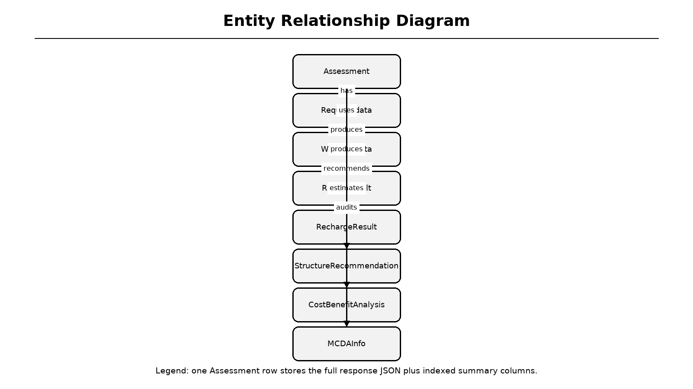
Figure 5.6: Entity relationship diagram
Legend: one Assessment aggregates the request, weather, runoff, recharge, structures, economics and MCDA data.
Table 5.3: Assessment table summary
| Column group | Representative columns | Purpose |
|---|---|---|
| Identity | id, timestamp | Shareable result and ordering |
| Site | name, location, latitude, longitude | Project identification |
| Inputs | roof_type, roof_area, soil_type, depth | Reproducibility |
| Outputs | annual_runoff_volume, recharge, cost | Quick history queries |
| Complete state | full_response_json | PDF regeneration and result links |
5.9 UML Use Case and Class Views
The use case view identifies residents, engineers and administrators as actors and groups their interactions into assessment, visualisation, reporting and maintenance services. The class view is simplified because the implementation uses Pydantic data-transfer objects rather than deep inheritance hierarchies. Composition is preferred: AssessmentResponse contains WeatherData, RunoffResult, RechargeResult, a list of structures, CostBenefitAnalysis and MCDAInfo.
This structural choice keeps domain objects immutable from the API consumer's perspective. Services are stateless functions, and the ORM entity is used only for persistence. As a result, changes to visualisation do not require database schema changes, and new calculation services can be added without altering the frontend contract.

Figure 5.7: UML use case diagram
Legend: use cases are grouped by user goal and system responsibility.
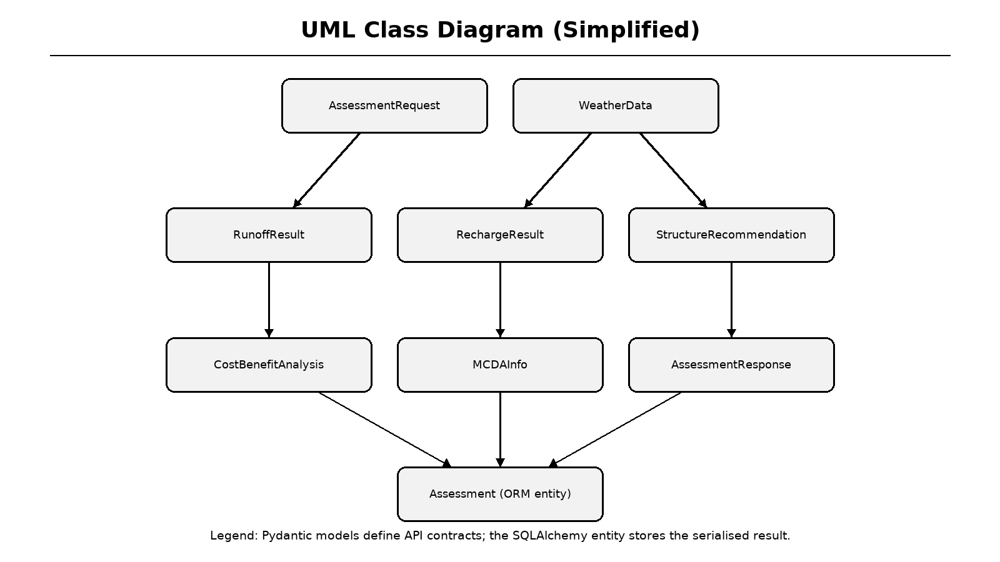
Figure 5.8: Simplified UML class diagram
Legend: Pydantic response models are composed inside AssessmentResponse.
5.10 Sequence Diagram
The sequence diagram traces a successful assessment. The user fills the wizard, the UI posts to the same-origin /api path, the Next.js rewrite forwards the request to FastAPI, and FastAPI invokes domain services. After computation, the response is persisted and returned through the proxy to the browser, which navigates to the results page.
The diagram also clarifies why the frontend never calls a private localhost backend in deployment. Browser requests remain same-origin, while server-side rewrites can target a separately hosted API. This avoids mixed-content problems and reduces CORS complexity.
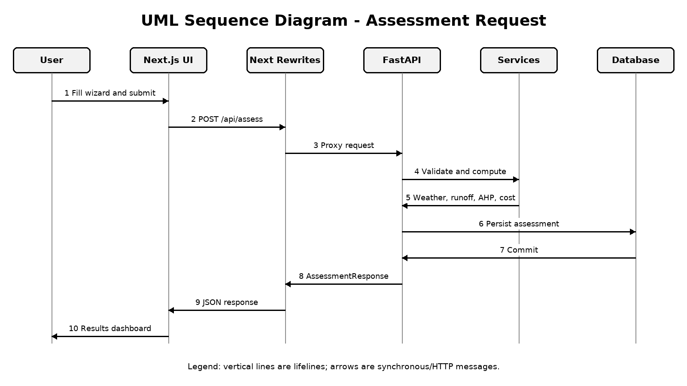
Figure 5.9: UML sequence diagram for assessment creation
Legend: vertical lifelines represent participants; horizontal arrows represent messages.
5.11 Component Diagram
The component diagram maps frontend pages and the API client to FastAPI routes and domain services. Static assets such as the precipitation raster and fonts are read by the rainfall-grid and PDF components. The database component stores the full response and powers result retrieval and report regeneration.
Loose coupling is achieved through narrow function signatures. For example, calculate_runoff depends only on AssessmentRequest and WeatherData, not on HTTP or SQLAlchemy. This makes it possible to test the hydrology module with synthetic weather objects and to replace the rainfall source later without rewriting the calculation engine.
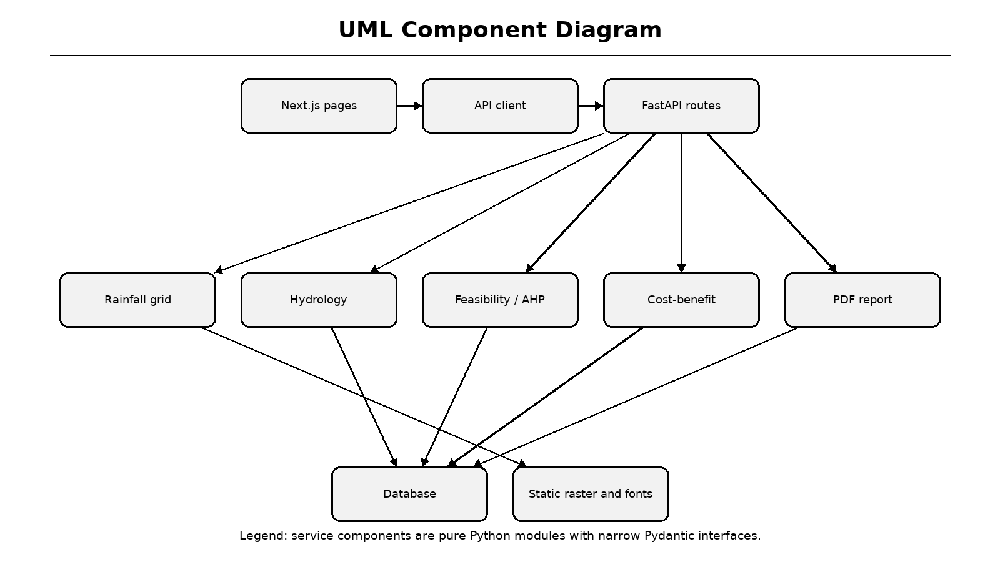
Figure 5.10: UML component diagram
Legend: components communicate through typed interfaces rather than shared global state.
5.12 Deployment and State Diagrams
The deployment diagram shows a browser or mobile client, a Vercel-hosted Next.js frontend, a FastAPI service, a PostgreSQL or SQLite database and local raster/font assets. The project frontend is deployed at the URL supplied by the team, while the backend can be hosted separately and reached through the configured rewrite target.
The state machine describes an assessment from idle through input, weather preview, computation, results and export. Error transitions return to input without losing data. A new assessment resets the state machine. These views connect the logical design to the operational status described later in the report.
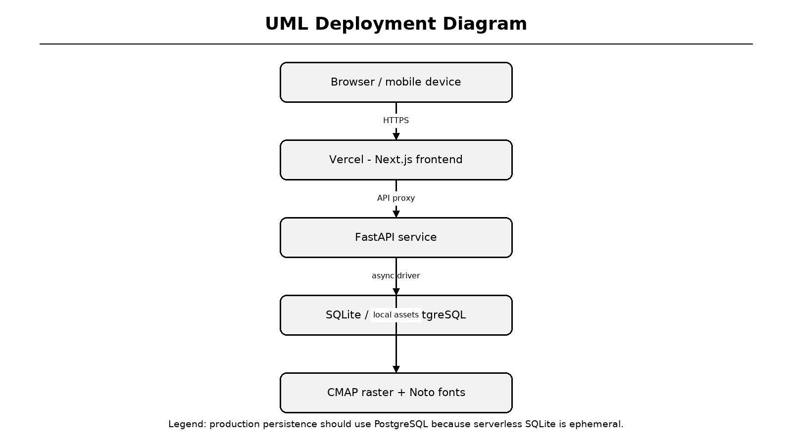
Figure 5.11: UML deployment diagram
Legend: production persistence should use PostgreSQL rather than ephemeral serverless SQLite.
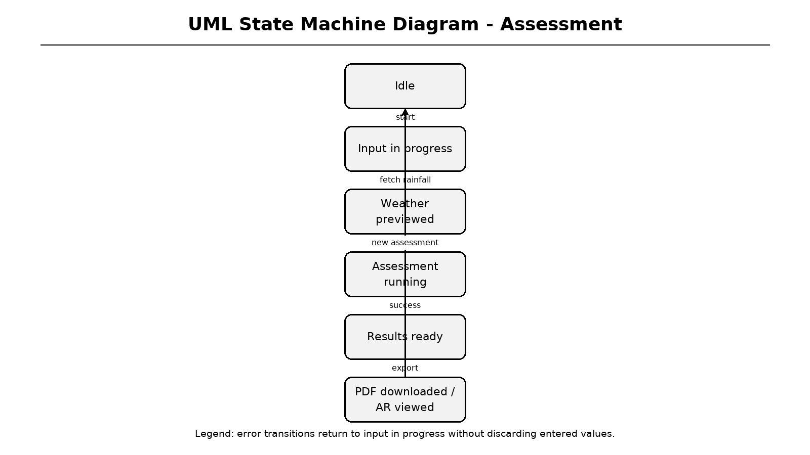
Figure 5.12: UML state machine diagram
Legend: the export state includes PDF download and 3D/AR inspection.